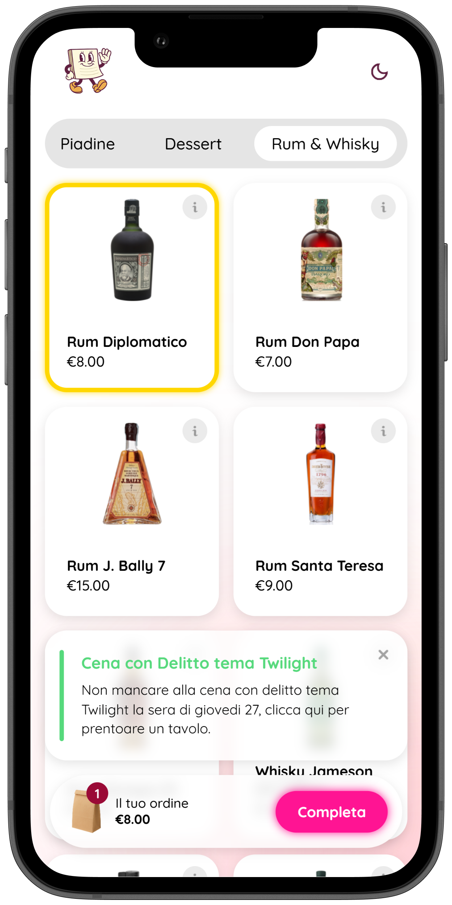
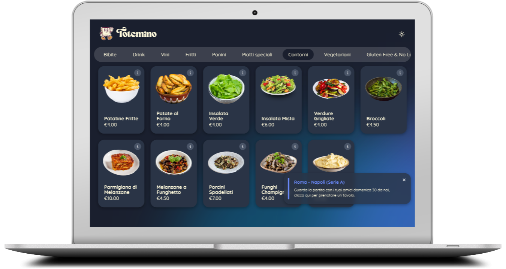

Non è un semplice menù digitale: è un percorso di ordinazione studiato per far scoprire tutta la tua offerta, ridurre la pressione sociale e suggerire gli extra giusti al checkout.


Psicologia, UX e suggerimenti automatici: tre leve che spingono il cliente a comprare di più, senza sentirsi “venduto”.
Con l’ordinazione autonoma il cliente si prende il suo tempo e aggiunge più facilmente extra e personalizzazioni. In molte catene e casi d’uso, i kiosk sono associati a un aumento dello scontrino medio nell’ordine del 15%–30%.
Fonti: QSR Magazine (Tillster), QSR Magazine (2018), Tourism and Hospitality Management (PDF, 2023)
Le scelte si fanno velocemente: molte persone decidono cosa ordinare in meno di 3 minuti. Se il menù è scomodo (QR, zoom, PDF), si vedono solo poche cose. Totemino rende l’esplorazione fluida e ti permette di far “passare” tutto il menù prima del checkout.
Fonti: Restaurant Online (ricerca commissionata da Elliotts), US Foods (sondaggio: preferenza menù fisico vs QR)
Prima del pagamento, Totemino rilegge l’ordine e propone ciò che manca in modo coerente con quello che il cliente ha già scelto. I motori di raccomandazione e le proposte contestuali sono una leva concreta per aumentare check-size e vendite digitali.
Fonti: Tillster (recommendation engines), Ingenico (case study: più item nel carrello), Temple University (ansia e design della fila)
Nota: i risultati variano in base a tipo di locale, pricing e configurazione del menù. L’obiettivo di Totemino è rendere sistematiche queste leve (UX + suggerimenti) e misurarle nelle tue statistiche.
Una piattaforma completa per modernizzare il tuo ristorante
Crea menù interattivi con foto, descrizioni, aggiunte e allergeni e cambia i prezzi quando vuoi
I clienti ordinano dal tavolo o da casa e gli ordini arrivano subito in cucina
Report dettagliati su vendite, prodotti più richiesti e performance del locale
Accetta pagamenti con carta direttamente dall'app, senza commissioni extra
Banner pubblicitari, codici sconto e suggerimenti AI per aumentare le vendite
Assistenza prioritaria e aggiornamenti continui per il successo del tuo business
In modo da poter eseguire operazioni gestionali anche dalla comodità del telefono
Ottieni tutti i vantaggi dei soliti menù "premium", ma senza pagare l'etichetta
Attiva Totemino in pochi minuti
Aggiungi prodotti, foto e descrizioni dal pannello di controllo
Stampa i QR code personalizzati per ogni tavolo del tuo locale
I clienti ordinano in autonomia e tu gestisci tutto da un'unica dashboard